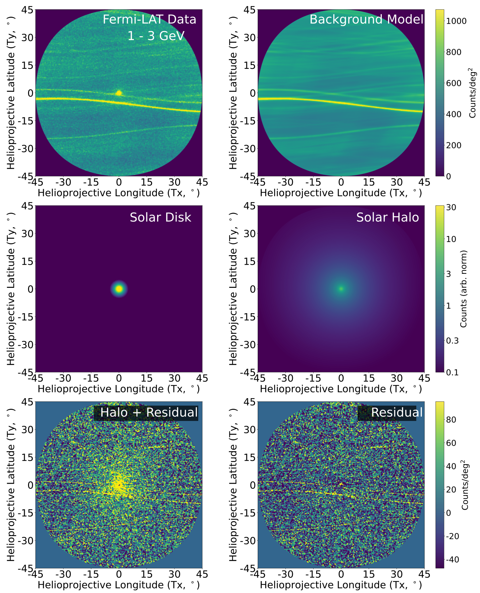
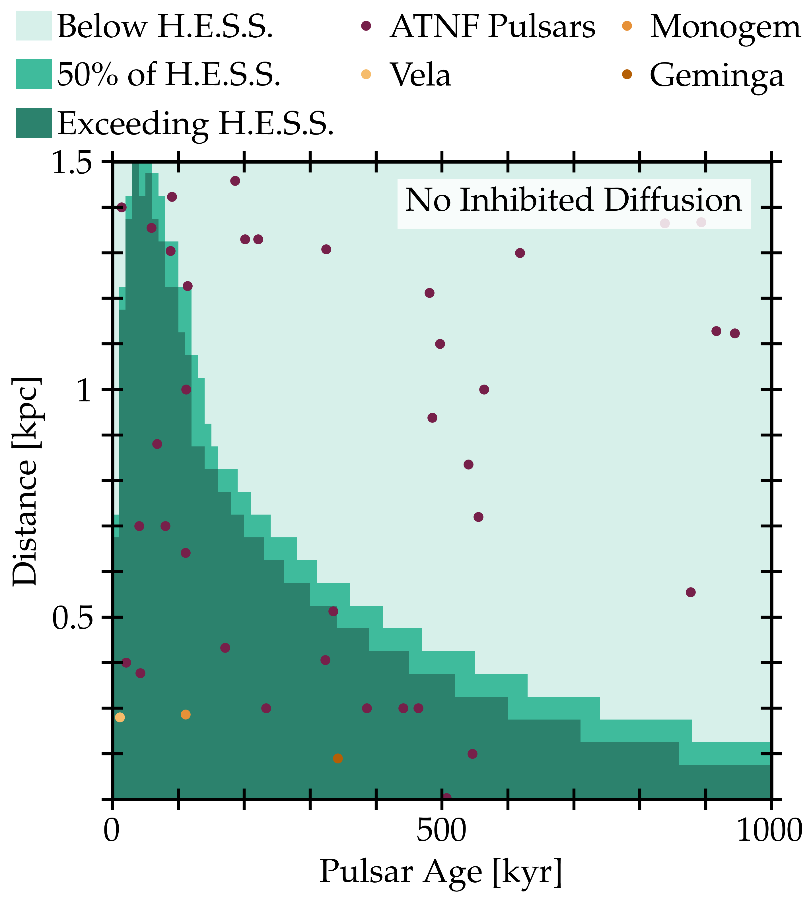
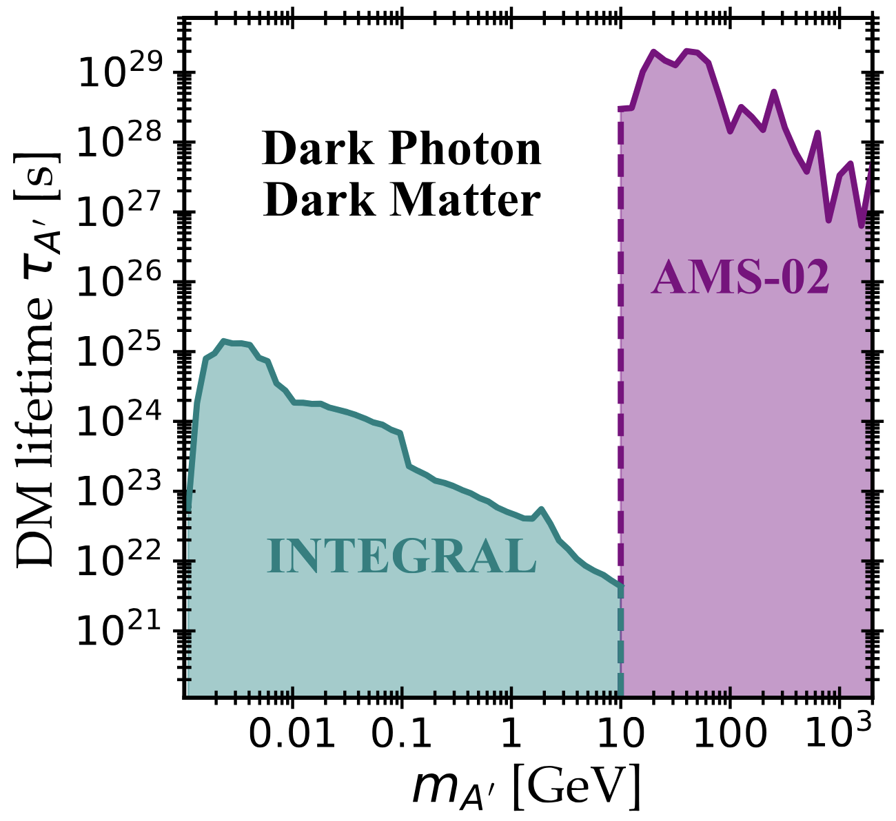
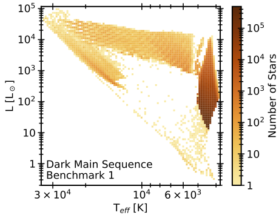
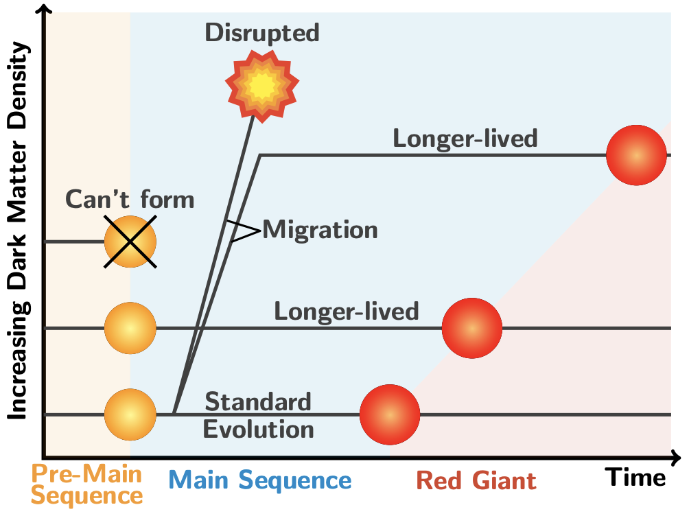
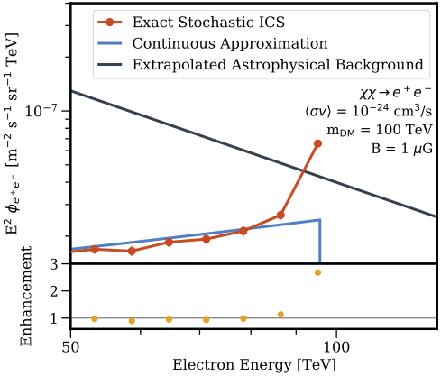
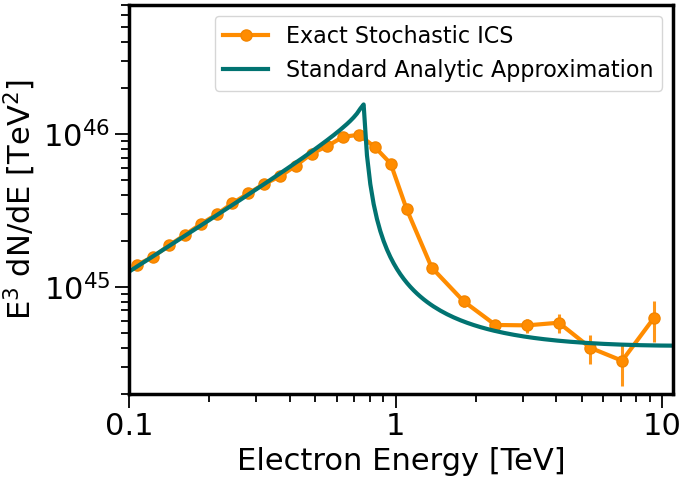
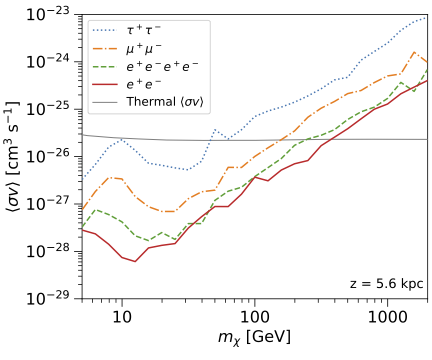
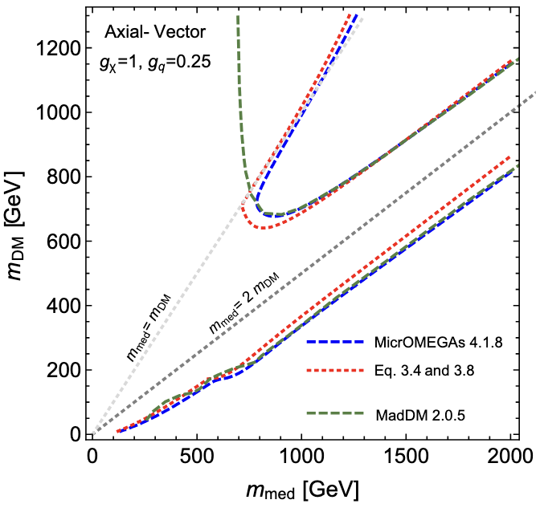

First Observations of Solar Halo Gamma Rays Over a Full Solar Cycle
Tim Linden, Jung-Tsung Li, Bei Zhou, Isabelle John, Milena Crnogorčević, Annika H. G. Peter, John F. Beacom
Submitted to Journal.
Using 15 years of Fermi-LAT data, we detect the solar halo, a bright emission of gamma rays between 31.6 MeV
and 100 GeV and extending out to 45 degrees around the Sun. These gamma rays are produced by the inverse-Compton
scattering of highly-energetic cosmic-ray electrons and positrons with sunlight. The morphology of the solar halo
is shaped by the activity of the Sun, called solar modulation, and changes over time. Our analysis
provides results on the strength and time-variation of solar modulation near the Sun, showing remarkable
consistency with complementary measurements of cosmic rays taken near Earth.
read more →

Every Nearby Energetic Pulsar Is Surrounded by a Region of Inhibited Diffusion
Isabelle John & Tim Linden
Submitted to Journal.
Recently, the H.E.S.S. telescope has released the cosmic-ray electron-plus-positron flux up to 40 TeV,
which follows a smooth and steeply falling powerlaw above 1 TeV. This is in tension with simple pulsar
models that predict a hard flux at 10 TeV. We find 20 pulsars that would individually overproduce the
H.E.S.S. data and show that they must be surrounded by a region of inhibited diffusion, which causes
the e+e- produced by the pulsar to lose energy already in the vicinity of the pulsar. This reduces the
high-energy flux at Earth, consistent with H.E.S.S. data. We conclude that every nearby energetic pulsar
must be surrounded by such a region of inhibited diffusion, and is detectable in radio, x-ray or gamma-ray searches.
read more →

Strong Constraints on Dark Photon and Scalar Dark Matter Decay from INTEGRAL and AMS-02
Thong T. Q. Nguyen, Isabelle John, Tim Linden & Tim M. P. Tait
Submitted to Journal.
Dark matter particles may decay into Standard Model particles, leaving distinct signatures in
the cosmic-ray and photon fluxes. We consider the decay of dark photon and scalar dark matter particles, and,
compared to previous analyses, implement a more realistic scenario that includes the full decay width to all
Standard Model particles. Using the INTEGRAL x-ray and AMS-02 cosmic-ray positron, we derive constraints
on the lifetime of dark photon and scalar dark matter particles over a wide mass range
that strongly exceed previous results.
read more →

Dark Branches of Immortal Stars at the Galactic Center
Isabelle John, Rebecca K. Leane & Tim Linden
Accepted by PRD.
The capture and subsequent annihilation of dark matter in stellar cores can act as a power source to stars
alternatively to nuclear fusion, which slows down or even halts stellar evolution, granting stars immortality.
We establish the dark mater sequence, a new branch of stars on the Hertzprung-Russell diagram populated by
dark-matter powered stars. Using this dark main sequence, we can determine the presence of dark matter burning
in star clusters.
read more →

Dark Matter Scattering Constraints from Observations of Stars Surrounding Sgr A*
Isabelle John, Rebecca K. Leane & Tim Linden
The stars around Sgr A*, called the S-cluster, face extremely high dark matter densities, making the
capture and subsequent annihilation of dark matter in these stars extremely efficient, which changes them
significantly: (1) stars can be prevented from forming, (2) stars can be partially powered by dark matter,
slowing their evolution and making them appear younger, and (3) dark matter can disrupt stars that migrate
towards the Galactic Center, moving them off the main sequence. Based on these scenarios, we constrain
dark matter using recent measurements of S-cluster stars.
read more →

Accurate Inverse-Compton Models Strongly Enhance Leptophilic Dark Matter Signals
Isabelle John & Tim Linden
The annihilation of TeV-scale dark matter into electron-positron (e+e-) pairs produces a sharp cutoff
in the local cosmic-ray e+e- spectrum at an energy near the dark matter mass. We show that this
sharp signal is greatly enhanced when energy losses from inverse-Compton scattering are precisely
modelled as a stochastic process instead of using the commonly used continuous approximation. This
increases the detectability of heavy dark matter annihilating to e+e− final states.
read more →

Pulsars Do Not Produce Sharp Features in the Cosmic-Ray Electron and Positron Spectra
Isabelle John & Tim Linden
Pulsars produce high energy electrons and positrons and dominate the local cosmic-ray positron flux
at high energies. Standard pulsar models predict a sharp cutoff due to the rapid energy losses that the
e+e- experience during propagation. We show that this sharp cutoff does not exist — it is erroneously
introduced by the continuous approximation of inverse-Compton energy losses, which does not account for the
stochastic and catastrophic nature of energy losses. Instead, pulsar features are much smoother. Intriguingly, this
establishes dark matter as the only mechanism able of producing sharp spectral features, making the cosmic ray
positrons a promising avenue for dark matter searches.
read more →

Cosmic-Ray Positrons Strongly Constrain Leptophilic Dark Matter
Isabelle John & Tim Linden
The cosmic-ray positron flux is one of the most powerful probes of dark matter annihilation. We use the
extremely precise positron measurements by AMS-02 to search for spectral features consistent with
leptophilic dark matter signals. Finding no significant signals, we derive strong constraints on the dark
matter annihilation cross section in the mass range of 5 GeV to 1 TeV, that improve on previous constraints.
read more →

Recommendations of the LHC Dark Matter Working Group: Comparing LHC searches for heavy mediators of dark matter production in visible and invisible decay channels
Andreas Albert, Mihailo Backovic, Antonio Boveia, Oliver Buchmueller, Giorgio Busoni, Albert De Roeck, Caterina Doglioni, Tristan DuPree, Malcolm Fairbairn, Marie-Helene Genest, Stefania Gori, Giuliano Gustavino, Kristian Hahn, Ulrich Haisch, Philip C. Harris, Dan Hayden, Valerio Ippolito, Isabelle John, Felix Kahlhoefer, Suchita Kulkarni, Greg Landsberg, Steven Lowette, Kentarou Mawatari, Antonio Riotto, William Shepherd, Tim M.P. Tait, Emma Tolley, Patrick Tunney, Bryan Zaldivar & Markus Zinser
Weakly-coupled TeV-scale particles may mediate the interactions between normal matter and dark matter. If so, the LHC would produce dark matter through these mediators, leading to the familiar "mono-X" search signatures, but the mediators would also produce signals without missing momentum via the same vertices involved in their production. This document from the LHC Dark Matter Working Group suggests how to compare searches for these two types of signals in case of vector and axial-vector mediators, based on a workshop that took place on September 19/20, 2016 and subsequent discussions. These suggestions include how to extend the spin-1 mediated simplified models already in widespread use to include lepton couplings. This document also provides analytic calculations of the relic density in the simplified models and reports an issue that arose when ATLAS and CMS first began to use preliminary numerical calculations of the dark matter relic density in these models.
read more →